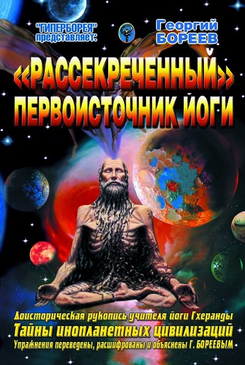

"Рассекреченный" первоисточник йоги
"Гхеранда Самхита" - наиболее авторитетный текст по Хатха йоге, дошедший до читателя наших дней. Доисторическая рукопись дана в форме диалога между учителем йоги и вопрошающим учеником. Первоначальный текст был изложен на санскрите - всемирном языке древних землян. В книге, котор…
hârtie 300,00 руб · ebook 150,00 руб